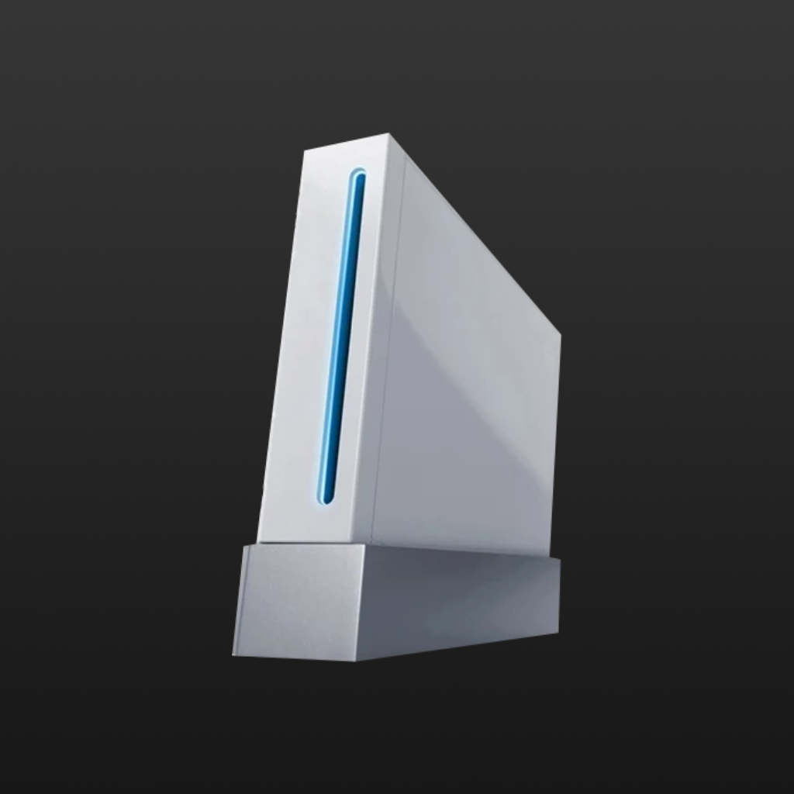

Save Disk Space
Wii games contain massive amounts of padding (dummy data). Scrub it away to drastically reduce file sizes, saving precious storage space without affecting game functionality.

Revolution Disk ScrubberRevolution Disk Scrubber allows you to shrink and manage your Nintendo Wii ISOs. Remove dummy padding data to save significant disk space, and extract or replace game files for your modding projects.
Important: Revolution Disk Scrubber is to be used exclusively with legally obtained backups of games you own. We do not condone or support piracy in any form.

Features
Everything you need for Wii ISO management on macOS.
Wii games contain massive amounts of padding (dummy data). Scrub it away to drastically reduce file sizes, saving precious storage space without affecting game functionality.
Browse the file system inside your ISO and extract the individual files you need to your Mac.
Replace internal game files directly within the ISO. Perfect for loading custom textures, models, or fan translations.
No need for Wine or Windows virtual machines. Enjoy a fast, native app built specifically for the Mac.
Designed strictly for managing your own legal backups. We absolutely do not condone piracy.
Take a look